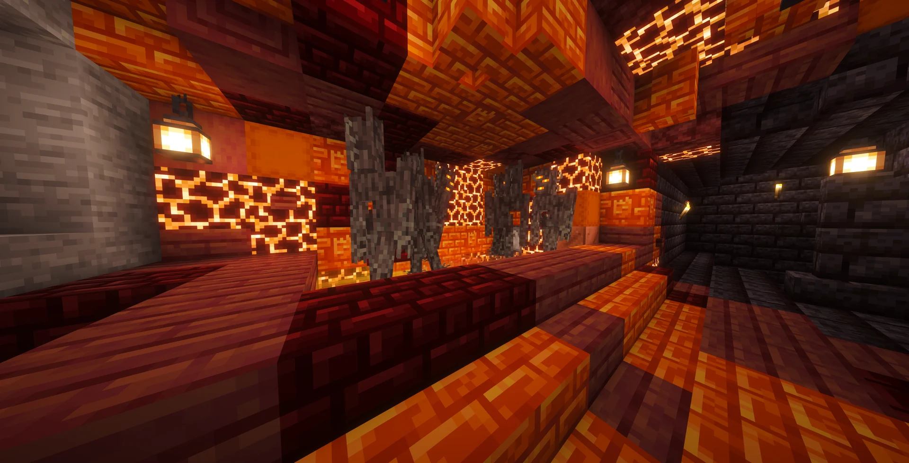
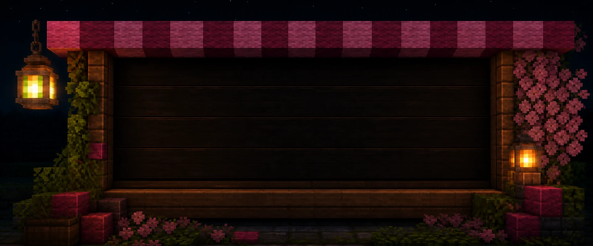
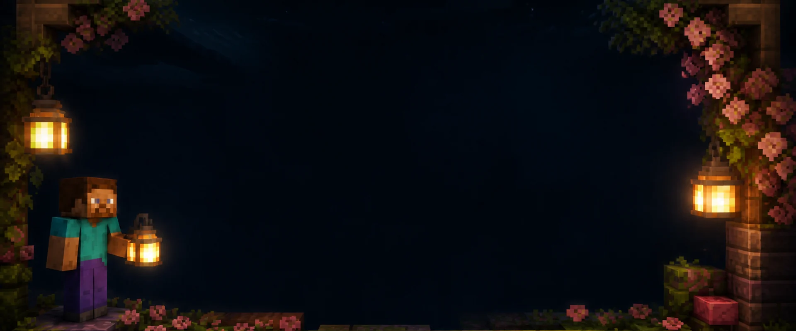
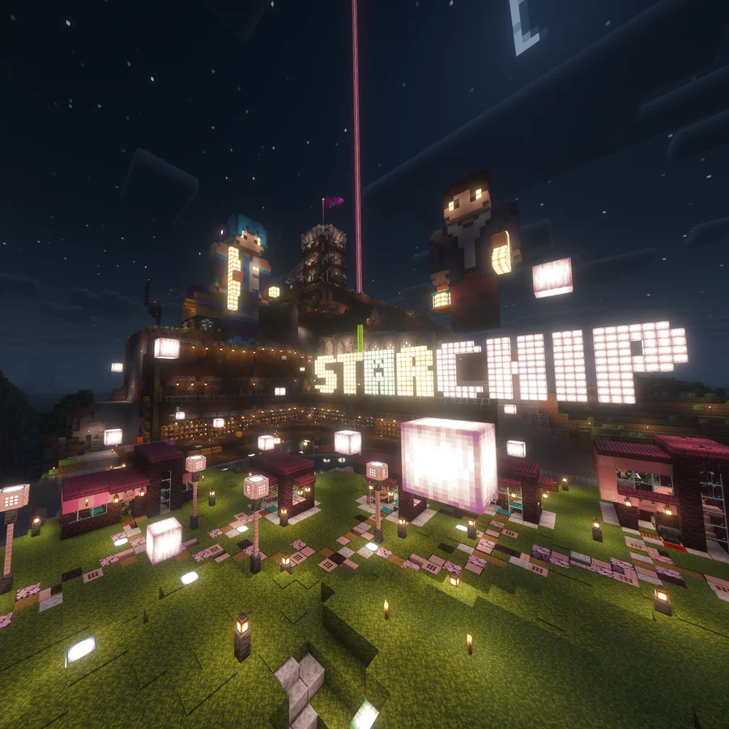

Survival
Build, explore, gather, and make a home together.
Starchip plaza
StarchipMC is a private Minecraft server run by Starfire and ChipChopClop.
To join, send an access request using the form below.
Build, explore, gather, and make a home together.
Start small and grow your island in the sky.

Choose your gear and enter the arena with friends.

Send a request to join.

We review the request.

Connect and choose a world.

No. StarchipMC is a private server for Starfire and her real-world friends. Invited players connect at play.starchipmc.com after access is approved.
Starfire and friends who know the group in real life. Access is shared directly rather than through public registration.
Friends meet in the floating Lobby, then choose Survival, Skyblocks, or the PvP Arena.
No custom modpack or required resource pack is currently needed.

